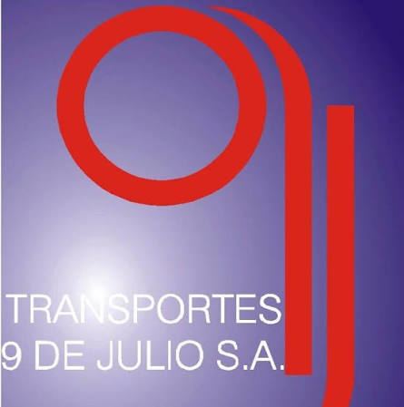
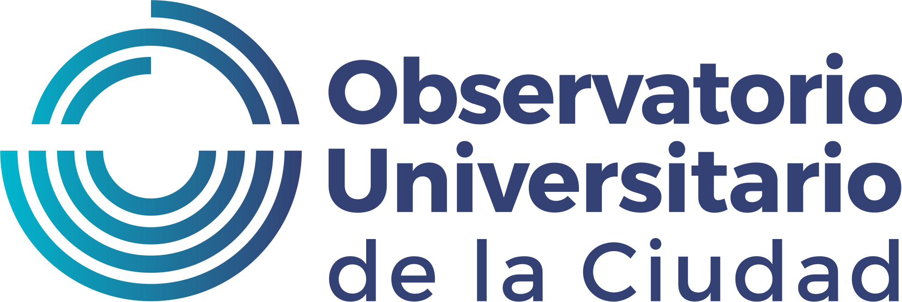

Zonas 9 de Julio
Mapa interactivo de las zonas de estudio, organizadas en los sectores Norte y Sur.
Abrir mapa →
Mapas interactivos del Observatorio Universitario de la Ciudad

Mapa interactivo de las zonas de estudio, organizadas en los sectores Norte y Sur.
Abrir mapa →Mapa interactivo de las 12 zonas de estudio del Observatorio, identificadas por colores.
Abrir mapa →